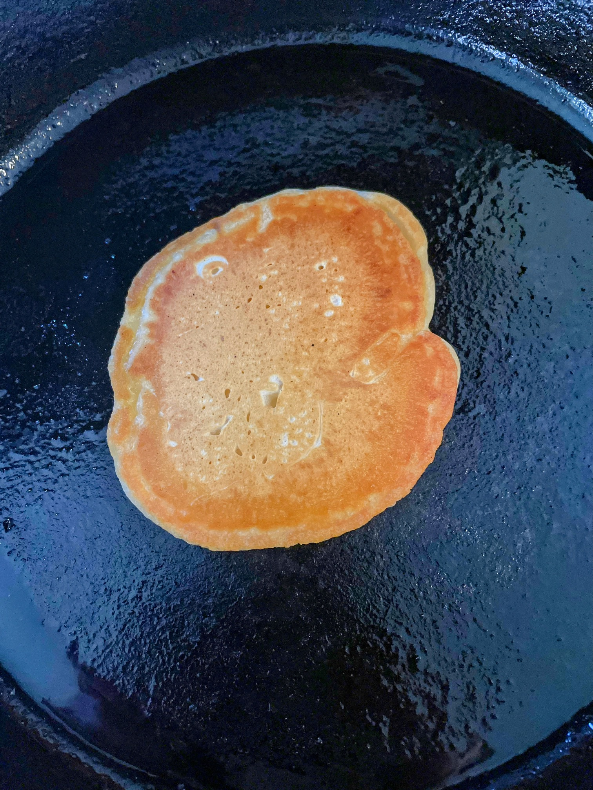

A recipe for hearty vegan pancakes
Ingredients
Dry
- 1/2 tsp baking powder
- 1/2 tsp baking soda
- 1 cup flour
- 1 tbsp corn starch
- 1/2 tsp salt
- Flax seed, jams (optional)
Wet
- 1 cup water or soy milk
- 1 tsp vinegar
- 2.5 tbsp oil
- 2.5 tbsp maple syrup
- 1 tbsp vanilla extract
Steps
- Combine dry ingredients in a large, pyrex measuring cup.
- Add wet ingredients and whisk with a spoon until all clumps are gone. Make sure to scrape the bottom.
- Heat up an oiled, cast-iron pan to medium-high heat, and dole pancake mixure onto pan with a spoon.
Size is up to you, but I've had good luck with 3 inch cakes.
- When the edges start to brown up and curl, it's time to flip.
- Another few minutes, and you're good to serve them. Make sure to have some decent VT syrup, NH will also do.